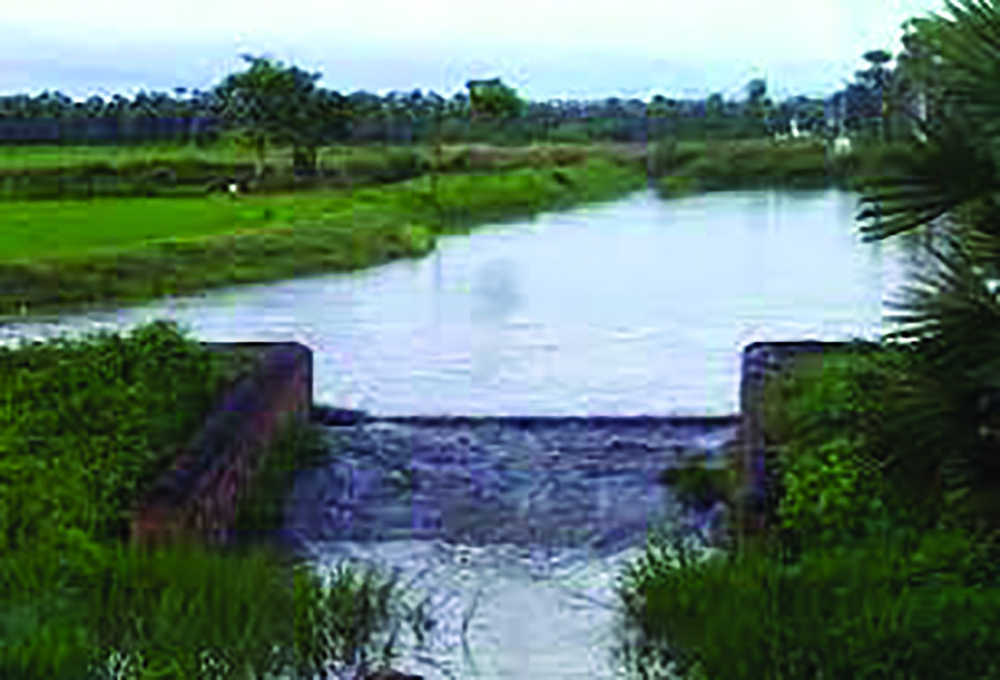
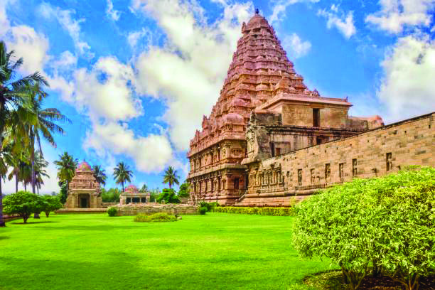
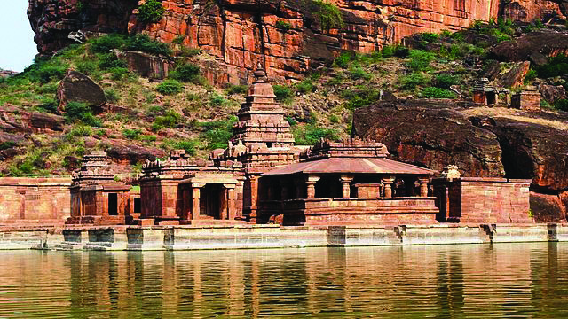
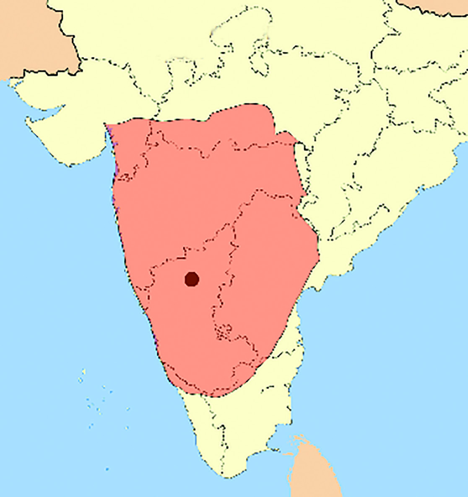
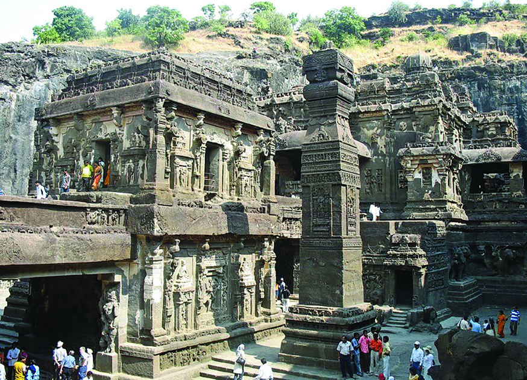
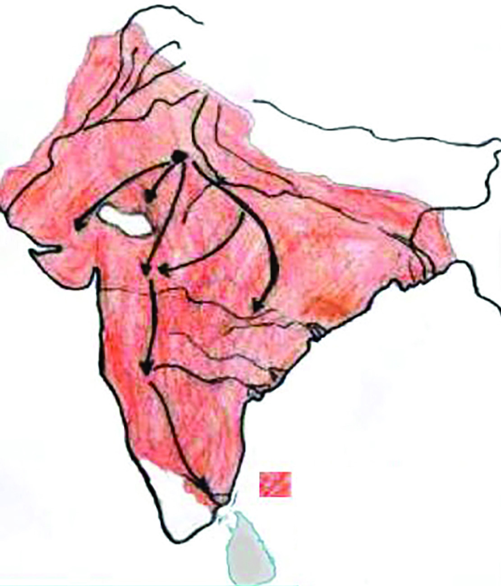
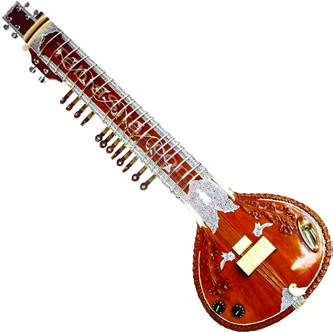
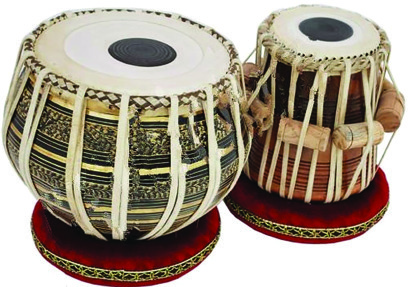

“Revenue shall be paid in paddy, gold or cash after measuring the land with Marakkal, named after Adavallav, theRajakesari… The Palaiyur Village of Inkanad in Thenkaduvay is also known as Arulmozhideva Valanadu… It includes the Jaina temple and Jaina teachers… Twelve thousand five hundred and thirty kalam, two tuni, one kuruni and one nazhi of paddy should be measured with Marakkal in the name of Rajakesari and should be paid as revenue.” FROM THE LAND OF CHOLAS TO DELHI 6 South Indian Inscriptions (Vol. 2., pages 47-48)
Figure: fig_ch48_p007_01Figure: fig_ch48_p007_02
Page 8
Chapter 6 112 Social Science I Cholamandalam which was around Thanjavur (Tanjore) was their headquarters. The Cholas captured power by defeating the Pallavas about whom you have already learned in the previous classes. Most of south India were then under the control of the Chola kings. This helped them in achieving social and economic stability. Given here are some excerpts from the inscription found on the southern wall of the second floor of the BrihadiswaraTemple of Tanjore which was built by Rajaraja chola. Let's see what it says: Revenue should be paid in paddy, gold or cash measured with the Marakkal in the name of the king. As per the measurements done in the Palaiyur village, which is a part of the Inkanad in Thenkaduvay region, this land includes a Jaina temple and a community of Jaina teachers. The paddy to be collected from there amounts to 12530 kalam, two tunis, one kuruni (names of different units of measurement of paddy). This paddy was to be measured by Marakkal which is named after the Rajakesari Adavallava (Rajaraja Chola). This inscription describes the south Indian kingdom ruled by the Cholas from the ninth to thirteenth century CE. It refers to the economic condition of the Chola kingdom. What information do we receive from this? ................................................................................. ................................................................................. ................................................................................. Observe the given map, identify and list the present south Indian regions that were included in the Chola kingdom. Chola Kingdom Kaveri Cholapuram Nagapattinam Madurai Krishna Krishna Tungabhadra Kanchipuram Gangaikonda
Figure: fig_ch48_p008_01Figure: fig_ch48_p008_02
Page 9
From the Land of Cholas to Delhi 113 Standard IX Identify from the map the river that helped in the prosperity of the Chola kingdom. How could a river contribute to the progress of a country? As you have discovered, the Chola Kingdom was located in the Kaveri River Valley which made the area rich in resources. Most of the people lived in villages as agriculture was their main occupation. They cultivated cereals, fruits, pulses, sugarcane, betel leaf, arecanut, ginger, turmeric and different varieties of flowers. The rulers who recognised the significance of irrigation in agriculture and constructed different irrigation facilities. These included ponds, tanks, canals and wells. In addition to this, bunds were constructed across the rivers and the water thus collected was distributed to different parts of the country through canals. Huge ponds were built in areas where there were no natural streams, and rainwater was collected in them during the rainy season. These water reservoirs that were protected from going dry were called ‘Erippatti.’ Apart from this, cultivators were given tax concessions for the development of agriculture and they were encouraged to bring barren land under cultivation. By donating land to temples and Brahmins, it became possible to expand agriculture to a larger area. However, such lands were filled by agricultural labourers who lived like slaves. Analyse the role played by the agriculture sector in the economy of the Chola Kingdom. Erippatti The Granary of Tamizhakam Thanjavur is a vast area located in the heart of Tamil Nadu. The presence of rivers and canals make this region suitable for agriculture. Rich with paddy fields and plantations of coconut trees, plantains and jack-fruit trees, this area was once known as the ‘granary of Tamizhakam.’ We have discussed, in the previous classes, that the surplus generated through agricultural progress leads to the development of trade. The inscriptions of the Chola period prove that both
Figure: fig_ch48_p009_01

Figure: fig_ch48_p009_02Figure: fig_ch48_p009_03
Page 10
Chapter 6 114 Social Science I internal and overseas trade were developed during that period. Several products were sold out in the local markets. Weaving was an important industry. Guilds of weavers existed at that time. Quality textile items were exported to north India and other parts. Sugarcane was also an important commercial product. Apart from agriculture, metal work was also developed. The idols and vessels found in the temples are evidence to this. The ornaments made of gold and silver had developed. The manufacturing of iron tools also developed. Pearl and coral were collected from the seashores and exported to foreign countries. A group of merchants from Cambodia visited the Chola kingdom in the eleventh century. During this period Nagapattinam, Mahabalipuram, Kaveripoompattinam, Shaliyur and Korkai were the important centres of coastal trade. The area where the present Visakhapattanam port is located was then known as Kulothungacholapattanam. Kulothunga Chola was a ruler of the Chola kingdom. Rich merchant guilds like Nagarathar and Manigramam made brisk trade possible. The trade network of the Cholas Kanchipuram Thanjavur Nagapattinam Lanka Cambodia Vietnam Malaysia Sumatra Indonesia Trade Routes Chola Territory Chola Influence Thailand Gangaikonda Cholapuram Vengi (Pala) Myanmar (Basavakalyan) Kalinga Western Chalukyas Kalyani Vangadesam
Figure: fig_ch48_p010_01
Page 11
From the Land of Cholas to Delhi 115 Standard IX Brihadiswara Temple Brihadiswara Temple or Rajarajeswara Temple is an important historical monument located in the Thanjavur city of Tamil Nadu. It is also known as ‘Thanjai Periya Kovil.’ It is surrounded by the Sivaganga Fort. The entrance to the temple is through two huge sculptured gopuras. The Vimana above the sanctum has thirteen stories. UNESCO has declared this temple a world heritage centre. Assess the role played by temples in the socio-economic life of the Chola Kingdom. Do you know the world-famous temple located at Thanjavur, the capital of the Chola kingdom? It is the Brihadiswara Temple built during the reign of Rajaraja Chola (985 – 1014). This temple of Gangaikondacholapuram was built during the reign of his successor Rajendra Chola I (1014 – 1044). The temples of that period were also very rich. The rich exchequer inspired the kings to build temples. Income from land got as gift, contributions from Grama Sabhas, tax collected from lands entitled to be taxed, contributions from devotees, the wealth derived from the economic transactions of the institution in the village, etc. were the sources of income of the temples. Educational institutions and hospitals functioned along with temples. A large number of people were employed in connection with the construction and maintenance of the temples. Artisans and craftsmen depended on the temples for their livelihood. It is understood that the Cholas maintained trade relations with our neighbouring countries like Sri Lanka. In Sri Lanka, they had established their political domination in addition to trade relations. The Chola inscriptions as well as the Sri Lankan literary works like Mahavamsa and Choolavamsa confirm this. South India’s relationship with South East Asia became very close under the Cholas. In addition to traders, the Buddhist and Hindu sages and scholars also travelled frequently from Cholanadu to Sumatra, Java and Malaysia. These travels resulted in the spread of language, religion, ideas, and architecture of the Chola kingdom in those lands. Observe the map and identify the lands with which the Chola Kingdom had trade relations.
Chapter 6 116 Social Science I Chola Rule We have studied the important kings of Cholanadu. A Council of Ministers assisted the king in administration. Marco Polo, who visited Kerala in the thirteenth century, opined that the Cholas had a very strong army, including a navy. The kingdom was divided into Mandalams, Valanadus and Nadus for administrative convenience. The rulers built many roads for development of trade and movement of the army. In addition to land tax, forests, mines, and salt were also taxed. Sale tax and professional tax were also collected. The unpaid service called ‘Vetti’ was also considered equal to tax. Many records of the time give evidence regarding village self-governance under the Cholas. The most important among them is the Uttharamaerur Inscription. Two types of Councils called ‘Ur’ and ‘Sabha’ existed during that period. They had autonomous power. Discuss the role played by the Cholas in spreading the Tamil language and the culture of south India to southeast Asia, and their impact on the life of the people of southeast Asia. The Chola Lake The Cholas had established their domination in the area around the Bay of Bengal. The naval dominance of the Cholas existed in the Bay of Bengal. Hence, the Bay of Bengal was called the Chola Lake. Gangaikonda Cholapuram Gangaikonda Cholapuram, the capital of the later Cholas, is located 36 kilometres north of Kumbhakonam in Tamil Nadu. It was Rajendra Chola who shifted the capital from Thanjavur to this location. This city and the temple of the city were built to commemorate his crossing of the river Ganga and the invasion of north India.
Figure: fig_ch48_p012_01Figure: fig_ch48_p012_02

Figure: fig_ch48_p012_03Figure: fig_ch48_p012_04
Page 13
From the Land of Cholas to Delhi 117 Standard IX Sabha Assembly of Elders in Brahmin Village Assembly of the People The maintenance of ponds, wells and roads was the responsibility of the local administrative bodies. However, the growth of feudalism, that you have studied in the previous units, constrained the activities of these local bodies. The society of the Chola kingdom was not egalitarian. Caste system and several hierarchies existed there. Brahmins were the highest section in the society. There were many landless agricultural workers and slave labourers in the society. Evaluate the efficiency of the Chola rule in comparison with the modern systems of governance. The Chalukyas Given here is the picture of the rock-cut Temple at Vatapi (Badami) in Karnataka. It was built by the Chalukyas, who ruled south India and Deccan from the sixth to the twelfth century CE. Jaina, Saiva and Vaishnava deities were there in these temples. In this period, the Chalukyas built several Temple at Vatapi
Figure: fig_ch48_p013_01

Figure: fig_ch48_p013_02
Page 14
Chapter 6 118 Social Science I Virupaksha Temple - Pattadakkal Virupaksha Temple - Pattadakkal temples. In the beginning, they constructed rock-cut temples but later shifted to structured temples. The Megutti Jaina Temple of Aihole in Karnataka, and the Virupaksha Temple of Pattadakkal are examples of the structural temples of the Chalukyas. Carvings can be seen on the pillars that support the roof of the temple. Even though the temples of the Chalukyas evolved out of the Gupta style, they reflected the Dravidian style which was the local traditional style of south India. The main feature of Dravidian architectural style was the use of rock-cut stone for construction. Plenty of rocks were obtained from the Western Ghats and Deccan Plateau. Skillful sculptors carved beautiful temples out of natural rocks. Have you thought how the Chalukyas could build so many temples? How could they have collected the resources, labourers and wealth required for this? We have discussed the availability of rock-cut stones for the construction of temples. They collected the required wealth from agriculture in the fertile Deccan region. They produced surplus through agriculture in the Krishna–Godavari Valleys. This surplus production made it possible to bring and employ the required workforce from outside. How did the geographical features of south India influence the temple construction of the Chalukyas?
Figure: fig_ch48_p014_01Figure: fig_ch48_p014_02
Page 15
From the Land of Cholas to Delhi 119 Standard IX Observe the map and identify the present Indian states where the Chalukya kingdom had extended. There was no centralised monarchy like the Cholas as we learned in the previous classes. Instead, the monarchy was controlled by temples, Brahmins who were the owners of the Brahmadeya land and the Samantas. Thus, the centres of power often got shifted. The Chalukyas ruled from the sixth to twelfth century CE, concentrating their power in places like Vatapi, Venki and Kalyani. Although the Chalukyas had a centralized taxation system and an organized bureaucracy, the rule was centred on the military-powered lords. There was no standing army. Unlike the Cholas, there was no Council of Ministers to assist the king. The power was exercised by the members of the royal family. Pulakesi II was the most notable Chalukya ruler. Chalukya Empire
y Centralised Administration
y Samanta Rule (Rule of feudatories)
y Local Administration
y Influence of the Temples Compare the Chola and Chalukya reigns based on the following hints.
Figure: fig_ch48_p015_01

Figure: fig_ch48_p015_02Figure: fig_ch48_p015_03
Page 16
Chapter 6 120 Social Science I The Tri-Party The picture of Nalanda, the Buddhist study centre which existed in India in the fifth century CE, is given here. This university, visited and studied by many including the famous Chinese traveller Huan Tsang, faced collapse later. But, the Pala king, Dharmapala, was one among the important rulers who rebuilt the Nalanda University. He granted 200 villages towards meeting the expenses of Nalanda. Moreover, he founded the Vikramashila University in Magadha on the top of a hill on the banks of the Ganga with the aim of spreading knowledge. The Pala kings, who ruled from the eighth to mid-ninth century CE with their centre of power in Eastern India (Bengal), built a lot of Buddha Viharas. They established relations with the neighbouring country Tibet. As a result, many Buddhist followers came to Nalanda and Vikramashila for studies. The Palas maintained relations with the Caliphs of Arabia and South East Asia. The economic condition of the Pala state improved through trade with these areas. Besides, the Shailendra kings, who ruled Malaya, Java and Sumatra, had sent their diplomats to the palace of the Palas. Vikramashila University Nalanda University Buddha Viharas The Pratiharas were the rulers of the western part of north India in the same period (from the eighth to the tenth century CE) when the Palas were in power. A native of Baghdad, Al-Masudi who visited Gujarat at the beginning of the tenth century CE, describes the achievements of the Pratihara kings. Bhoja was the most prominent Pratihara ruler. The Pratiharas promoted The age of Pala rule was a period of the spread of Indian culture and Buddhism. Bring out a digital magazine based on this statement.
From the Land of Cholas to Delhi 121 Standard IX art and literature. The Sanskrit poet and playwright Rajasekharan, who authored ‘Kavyameemamsa’ and ‘Karppuramanjari’ lived in the palace of the Pratiharas. They built many beautiful temples and buildings at Kanauj in modern Uttar Pradesh. During the eighth and ninth centuries CE, scholars from India were sent as diplomats to the palace of the Caliph of Baghdad. They spread Indian Science and Mathematics to the Arab world. In spite of the hostility between the Arab rulers of Sindh and the Pratiharas, the exchange of goods and travels of scholars between India and West Asia went on freely. Prepare an album elucidating the achievements of Pratiharas in the fields of art and literature. Teli Ka Mandir-Gwalior (Temple built during the Pratihara period) Malkhed Fort A picture of the Malkhed Fort (Manyakheda) situated in Gulbarga district of Karnataka is given here. It is made of limestone, locally known as ‘Shahabad Shila.’ From this, you might have understood that it is an ancient fort. It was built by the Rashtrakutas, who dominated Deccan and south India from the eighth to the tenth century CE. Govindan III and Amoghavarshan were the prominent Rashtrakuta rulers. Kavirajamargam is a notable work written by Amoghavarshan in Kannada. The Rashtrakuta rulers, who maintained religious tolerance, promoted Jainism along with Saivism and Vaishnavism. They also provided facilities for the Muslim traders to do trade, to settle down and to propagate their faith. This strengthened the foreign trade. The Rashtrakutas also promoted art and literature.
Chapter 6 122 Social Science I Delhi Sultanate So far, we have discussed the various regional kingdoms that existed in different parts of India. By the beginning of the thirteenth century CE, the majority of Indian territories came under a system of government that centred in Delhi. Let us look into the background and features of the same. We have learned Despite the progress they achieved in the fields of art and literature, could the Rashtrakuta society be considered as egalitarian one? Evaluate. Kailasa Temple - Ellora Even though, the three states that we familiarised in this section were continuously engaged in mutual warfare, they ensured the stability of governance in their respective provinces. They encouraged art, literature and building of temples along with agriculture. Besides Sanskrit Pandits, literateurs who used to write in other languages also lived in their palace. The rock- cut temple of Ellora was built by the Rashtrakutas. During the period of the Rashtrakutas the society was further divided on the basis of caste. In addition to the Chaturvarnya, there were other sections of the society that were subjected to untouchability and discrimination. Carpenters, cobblers and fishermen were included in this section. The dominant sections of the society–the Brahmins and the Kshatriyas–maintained their status. However, the fall of trade and the growth of agriculture led to the decline of the status of the Vaishyas and paved the way for the uplift of the status of the Sudras. As the Sudras had become the members of the army, their status improved. Though women participated in the religious and administrative areas along with men, their status declined. Evaluate the conditions that existed in the local kingdoms of India from the eighth to twelfth centuries CE.
Figure: fig_ch48_p018_01

Figure: fig_ch48_p018_02Figure: fig_ch48_p018_03
Page 19
From the Land of Cholas to Delhi 123 Standard IX in previous classes that the Arabs had commercial and cultural relations with India. But, at the beginning of the eighth century CE, the Arabs attacked Sindh, the western coastal region of the Indian Subcontinent. The goal behind this attack was the wealth of India and the trade interests of Arabs. With this invasion, other countries realised the political and military weakness of India. Then, the Turkish rulers, Mahmud of Ghazni and Muhammed of Ghor invaded India in the eleventh and twelfth centuries CE. Mahmud is said to have attacked India 17 times. This shows their interest in the great wealth of India. These invasions gradually gave way to the Sultanate rule (Delhi Sultanate), centred in Delhi. North India, central India and some parts of south India were under the rule of the Sultans. Five dynasties were in power during the period of Sultanate which lasted from 1206 to 1526 CE. They are as follows. Khalji Mamluk Tughlaq Sayyid Lodi The Dynasties of Delhi Sultanate The Arab Invasion of Sindh Persia Indus River Sindh Iraq The Arabs invaded the Sindh in 712 CE. It was led by Muhammed Bin Qasim, the military chief of the Umayyad Caliph of Baghdad. The immediate cause of the invasion of Sindh by the Arabs was the pirate attack of a ship going from Ceylon to Arabia loaded with gifts for the Caliph of Baghdad and Governor Al Hajjaj.
Figure: fig_ch48_p019_01Figure: fig_ch48_p019_02
Page 20
Chapter 6 124 Social Science I This period witnessed several experiments and administrative reforms. The Market Control executed during the reign of Alauddin Khalji (1296 – 1316) was important among them. Its objective was to control the prices of all products in general and the price of the foodstuff in particular. Alauddin had to build a strong army after the Mongolian invasion. He was forced to make such a reform because of his concern that a large army would require huge sum of money to be paid as salary. If the price of products is low, it is enough to pay low salary. As part of this, he established warehouses and punished those who charged higher prices and the hoarders. Organise a panel discussion in the class on the ways to be adopted to reduce the public expenses of the governments and the everyday expenses of the people in modern times. Sultana Razia (1236 – 39) Razia was the daughter of Iltumish, the prominent ruler of the Mamluk dynasty. Iltumish considered none of his sons qualified to succeed him to the throne and nominated Razia as his successor. Though there were women rulers in Iran and Egypt, nominating a woman to the throne was an important change during that period. The area dominated by Alauddin Khalji. (The arrow mark indicates his military movements)
Figure: fig_ch48_p020_01Figure: fig_ch48_p020_02

Figure: fig_ch48_p020_03
Page 21
From the Land of Cholas to Delhi 125 Standard IX Socio-Economic Life The Moroccan Traveler Ibn Batuta, who visited India in the fourteenth century, opined that the fertile soil of India was very suitable for agriculture. He has recorded that cultivation was done twice or thrice a year. The majority of the population was farmers. But, continuous famines and wars made the life of farmers difficult. Sugarcane, wheat, indigo, cotton, oil seeds, fruits and flowers were cultivated. This led to the development of crafts like oil making, jaggery making, weaving and colouring of textiles. ‘Rahat Irrigation system’ in which water was drawn from a waterbody for irrigation by spinning a wheel using cattle was in practice. In addition to the growth in agriculture, administrative stability, improvement in the transportation system and a monetary system based on Tanka (Silver) and Dirham (Copper) contributed to the growth of trade. Both exports and imports got strengthened. Soft silk, glass, horses, Chinese vessels, ivory and spices were imported from different countries. In India there were more exports than imports. So, gold and silver had flowed into India during that period. The development of trade caused the growth of cities and urban life. Delhi and Daulatabad were the biggest cities of the eastern world of that period. Bengal and Gujarat were well-known for their textile products. Lahore, Multan and Lucknow were busy towns. The Turks started paper making in addition to the already existing hand crafts like leatherwork, metallurgy, carpet making and carpentry. The whole land of the country was divided into iqtas and were allotted to the Turkish nobles. The nobles collected the land revenue from these iqtas and gave it to the Sultan. The collection of tax in cash led to the emergence of cash economy and thereby paved the way for the massive economic growth. Rahat Irrigation System Iqta System The Iqta system was introduced during the reign of the Delhi Sultan Iltumish. This was the system under which the land of the country was divided into large and small units that were granted to soldiers, bureaucrats and nobles. The land granted was known as Iqta.
Figure: fig_ch48_p021_01Figure: fig_ch48_p021_02
Page 22
Chapter 6 126 Social Science I Ancient India Sultanate Rule Caste System ............................................................. ............................................................. Status of Women ............................................................. ............................................................. Compare the social life in ancient India with that in the Sultanate period based on the following hints. Cultural Life Pictures of some musical instruments familiar to you are given. Can you find out their names? These musical instruments came to India during the Sultanate period. In this way, the Sultanate's rule had a strong influence on the cultural life of India. The Sultan's rule had different effects in different regions of India and in different areas of people's life. More than that, this did not happen suddenly, instead, a symbiosis of the two cultures formed through long-term mutual interaction. It has had its ups and downs at times. Examine, with the help of a diagram, how the agricultural progress during the reign of the Sultan influenced the country's economy. Now, let us see how the social life was during the Sultanate period. The medieval society was full of several inequalities. The Sultan, chief nobles, village chiefs called Muqdams, and lower nobles led their lives in high standards. Most of the people in the cities and villages underwent several sufferings. The existing social structure based on caste system did not undergo any fundamental changes. Some people are of the opinion that there had been some changes in the status of women. This progressive change can be seen in the women's right over the property. However, the caste system did not limit the interaction between the Hindus and the Muslims. The leaders of the army and administration were often the Hindus.
Figure: fig_ch48_p022_01Figure: fig_ch48_p022_02

Figure: fig_ch48_p022_03

Figure: fig_ch48_p022_04
Page 23
From the Land of Cholas to Delhi 127 Standard IX
Qutb Minar Tughlaqabad Fort Haus Khas Complex Lodi Gardens Apart from music, this influence can be seen in architecture and literature also. The Qutb Minar, Tughlaqabad Fort, Haus Khas Complex and Lodi Gardens situated in Delhi are examples of their contributions to the field of architecture. A lot of texts were composed in the Arabic language and many scientific and astronomical works of India were translated into Arabic during this period. The Persian language came to India with the arrival of the Turks. Amir Khusru was a writer who wrote beautiful works in the Persian language. Writing of history also grew into a prominent branch during this period. Ziauddin Barani was an important historian who lived in India during the Sultanate period. Urdu Language and Amir Khusru The Urdu language evolved as a unique blend of 'Hindavi', the vernacular language of the people of Delhi and its adjacent regions and Persian, a froeign language. The medieval Indian poet Amir Khusru played an important role in the development of Urdu. Given below are his words on India:
“I love India for two reasons. First, India is my motherland. To love the motherland is a part of everyone’s faith. Secondly, India is a beautiful world. The climate here is more beautiful than that of Khurasan. The nature here is full of flowers and green throughout the year.”
Chapter 6 128 Social Science I Organise a seminar on the influence of Sultan rule on the administrative and cultural life of India.
y Prepare a digital magazine showing the changes and influences in the field of architecture in India under the Sultans.
y Prepare a digital atlas including the maps of the important dynasties of south India and the Delhi Sultanate.
y Develop a digital presentation on the changes in the cultural life in India during the Sultanate period and present it in the class. Extended Activities After the decline of the Gupta rule, significant administrative interventions in India took place in Deccan and south India. Here, small kingdoms were replaced by large states. Local cultures were strengthened. A monarchical rule that was not based on individuals, arose. After the Arab conquest of Sindh in the eighth century, the Turks came and brought India under the rule of the Delhi Sultan for about three centuries. During this period, India witnessed a unified and stable Government. This was a period of cultural exchanges and integration. Organise a discussion on how the cultural contributions of the Sultanate period are still reflected in the culture of India.